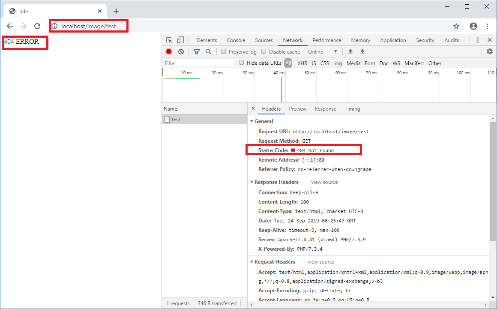
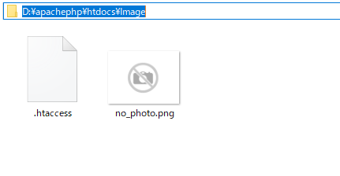
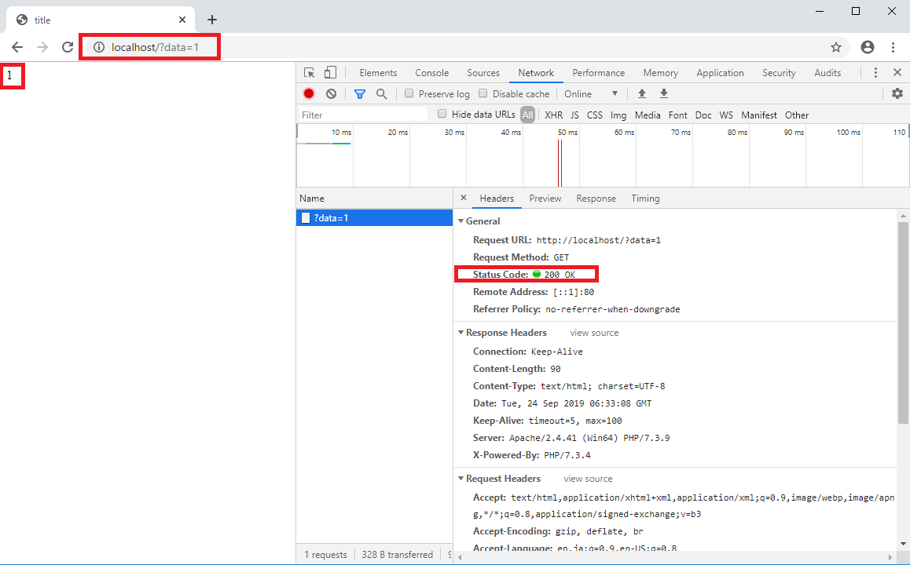
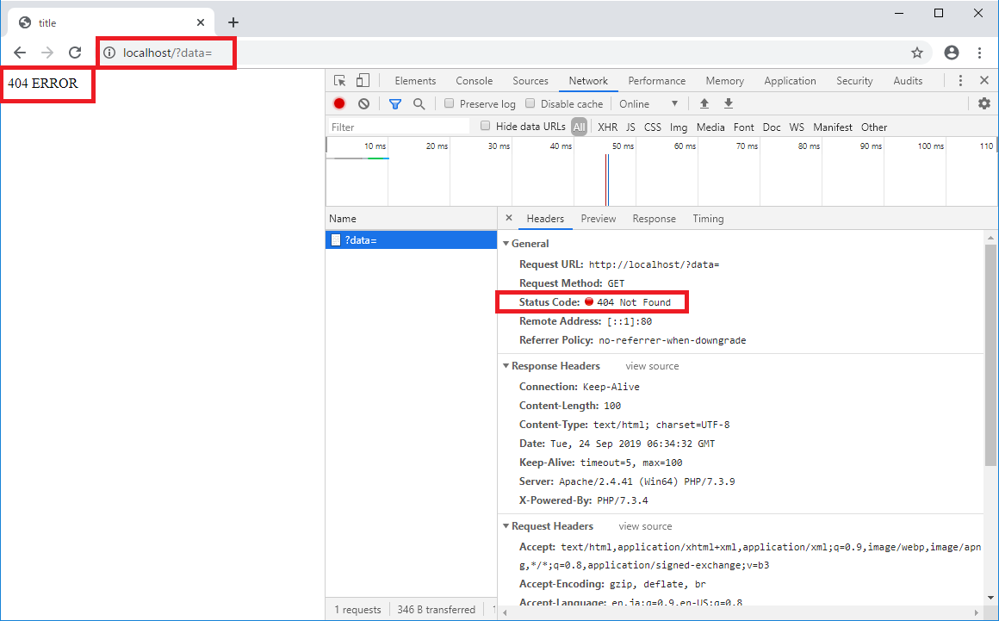

[PHP] エラーページ処理方法(追加: ob_cleanとdie関数使用方法)
こんにちは。明月です。
前述でPHPでエラーメッセージを処理する方法に関して説明したことがあります。
link - [PHP] Fatal及びNotice,、Warningメッセージ処理する方法
プログラムを開発する時にはこのエラーメッセージは重要です。エラーメッセージを見て間違ったことを修正するし、予想以外が発生することを確認しなければならないです。
でも、本番のサービスは違います。実際にインタネット上でエラーが発生することだと思えばログではエラーを残るけれども、画面上ではみえないようにしなければならないです。
一番、いい条件は初めからエラーが発生しないことがよいですが、全てのユーザの行動パターンを予測できないし作業者のミスや様々な条件で、エラーが必ず発生します。
なので、本番でエラーメッセージが見えることは実際にエラーメッセージでシステム情報や見えたらためな情報が見える可能性もあるし、ユーザがみて完成になれなかったことで見えるのでユーザによってサイトの信頼感が落ちることになります。
サイト内でエラーが発生するとエラーページに遷移しなければならないですが、その設定を「.htaccess」で設定可能です。
link - [PHP] 分散設定ファイル(.htaccess) 使用方法
link - HTTPステータスコード
(エラーコードをみながらみると理解しやすいです。)
Options -MultiViews
RewriteEngine On
Options -Indexes
RewriteRule ^(.*)$ index.php?htaccess=$1 [QSA,L]
# 404エラーが発生すると /Error?code=404に遷移する。
# RewriteRuleによってindex.php?htaccess=Error&code=404に変換する。
ErrorDocument 404 /Error?code=404
<?php
// htaccessパラメータにERRORがあれば実行する。
if(strtoupper($_GET["htaccess"]) == "ERROR") {
// codeパラメータでエラーコードを取得する。
$code = $_GET["code"];
// codeパラメータがなければ$codeを404に設定する。
if(trim($code) == ""){
$code = "404";
}
// $code.phpつまり、404エラーの場合ｈ404.phpをインクルードする。
@include($_SERVER["DOCUMENT_ROOT"]."/".$code.".php");
// 実行を止まる。
die();
}
?>
<!DOCTYPE html>
<html>
<head><title>title</title></head>
<body>
index.php
</body>
</html>
<!DOCTYPE html>
<html>
<head><title>title</title></head>
<body>
404 ERROR
</body>
</html>
上のエラーは我々がよく知っている「404」エラーに関して対応しました。404エラーはウェブページで当該なページが無い場合に発生することです。
先「.htaccess」をみれば「404」エラーが発生すると「/Error?code=404」にRewriteします。
また、RewriteRuleによって「index.php?htaccess=Error&code=404」に変換して遷移します。index.phpの中でエラーがある場合にエラーコードによってページを読み込んで画面に掲示します。

imageフォルダ中で実際に「test」ファイルは存在しません。

なので「404」エラーが発生します。
上の例はサーバ上でエラーが発生したことで、ソース内部でエラーが発生する時の処理です。
<?php
// エラー関数呼出す。
function response_error($code) {
// response http statusを$codeによって呼出す。
http_response_code($code);
// 今まで、処理したhttp bodyバッファをクリアする。
ob_clean();
// $code.php、つまり404エラーの場合、404.phpを呼出す。
@include($_SERVER["DOCUMENT_ROOT"]."/".$code.".php");
// 実行を止まる。
die();
}
// GETパラメータにエラーがあれば下記の条件が実行する。
if(strtoupper($_GET["htaccess"]) == "ERROR"){
// パラメータcodeを取得する。
$code = $_GET["code"];
// パラメータcodeがなければ、$codeデータを404に設定する。
if(trim($code) == ""){
$code = "404";
}
// $code.php、つまり404エラーの場合、404.phpを呼出す。
@include($_SERVER["DOCUMENT_ROOT"]."/".$code.".php");
// 実行を止まる。
die();
}
// パラメータdataを取得する。
$data = $_GET["data"];
// データがなければ、
if($data == null){
// 404エラー関数を呼出す。
response_error(404);
}
?>
<!DOCTYPE html>
<html>
<head><title>title</title></head>
<body>
<?=$data?>
</body>
</html>
上の例はパラメータがNULLかどうかでエラーが表示されるように実装しました。

上の結果はdataのパラメータに「1」というデータを入れるとhttp statusが200になりますね。200は正常です。
ウェブページも「1」という結果が表示されます。

上の結果はdataのパラメータにNULLをいれる(何も入力してない状況)と「404」エラーになります。
上のソースで「response_error」関数に404のデータを入力したから「404ERROR」ページが表示されます。
ここでPHP組込関数として「ob_clean」と「die」関数を使いました。
PHPは「 」領域の以外にはHTMLマークで作成します。
そのHTMLマークはサーバからResponseする時バッファにStringタイプで格納していますよ。なので途中でincludeやphp計算式でバッファにbodyデータを書き込むと上から順番処理で格納されることです。
そのバッファをクリアする関数がob_cleanです。つまり、HTMLタグをたくさん書いてもPHPファイルの一番下に「ob_clean」を呼出すと空ページが表示されます。
「die」の場合は意味としてはエラーが発生するらしいな関数ですが、実は「die」が呼出したところで処理を止まって画面に表示するという意味です。
link - https://www.php.net/manual/en/function.ob-clean.php
link - https://www.php.net/die
- [CakePHP] Errorページを設定する方法2020/02/20 03:00:00
- [CakePHP] Transactionを使う方法とEntityクラスを利用してInsert、Update、Deleteする方法2020/02/19 03:00:00
- [CakePHP] ORMのテーブルFetch設定2020/02/18 03:00:00
- [CakePHP] Cakeフレームワークでデータベースに接続する時に使うQuery式とEntityクラス、Tableクラス、ResultSet2020/02/17 08:16:23
- [CakePHP] データベース(MariaDB(Mysql))を接続する方法2020/02/14 03:00:00
- [PHP] namespaceとuse2020/02/13 03:00:00
- [CakePHP] RequestとResponseに関して2020/02/12 03:00:02
- [CakePHP] PHPのCakeからAjax要請がある時、jsonタイプ(json_encode関数)でResponseする方法とControllerでViewを選択する方法2020/02/08 03:00:00
- [CakePHP] MVCフレームワークのCakeをインストールする方法2020/02/07 03:00:02
- [PHP] 自動require及びincludeをする方法(spl_autoload_register)2020/02/05 03:00:00
- [PHP] 匿名関数(ラムダ式)とクロージャ(closure)2020/02/04 03:00:00
- [PHP] PHPのコーディング領域とデザイン領域を分離するテンプレートライブラリ Smarty2020/02/02 03:00:00
- [PHP] Reflection - Variable編2020/02/01 03:00:00
- [PHP] Reflection - Method編2020/01/31 03:00:00
- [PHP] Reflection - Class編2020/01/30 03:00:00
- [Python] 03. Pythonでリスト(list)とタプル(tuple)、そしてディクショナリ(dictionary)、セット(set)2020/05/27 18:49:08
- [Python] 02. データタイプ、変数宣言そしてコメントする方法2020/05/26 18:16:52
- [Python] 01. Python3をインストールする方法(Anacondaインストール)2020/05/25 19:02:44
- [Java] HttpConnectionを利用してウェブページを取得する方法2020/05/20 23:53:24
- [Java] Jsoupを利用してXMLファイル(HTML)を扱う方法2020/05/19 19:32:21
- [C#] 非同期ソケット通信(IOCP)-APMパターン2020/05/18 18:45:37
- [C#] 非同期ソケット通信(IOCP)-EAPパターン2020/05/15 19:31:02
- [C#] ソケット(Socket)通信をする方法2020/05/13 17:37:13
- [C#] NPOIを利用してExcelを読み込んで出力する方法2020/05/08 10:43:52
- [C#] NPOIライブラリを利用してエクセルファイルを生成する方法2020/05/07 01:49:01
- [C#] Geckoライブラリを利用してウェブスクレイピングする方法2020/05/05 00:52:26
- [C#] PDFを作成する方法(iTextSharp)2020/05/03 10:22:40
- [C#] シリアライズ(Serialization)をする方法2020/04/30 19:32:04
- [C#] dynamicタイプの動的パラメータ-DynamicObject(WinFormでASP.MVCのViewBagオブジェクトを使用する方法)2020/04/29 22:41:32
- [C#] Stringの補間式(interpolation)2020/04/27 20:39:57